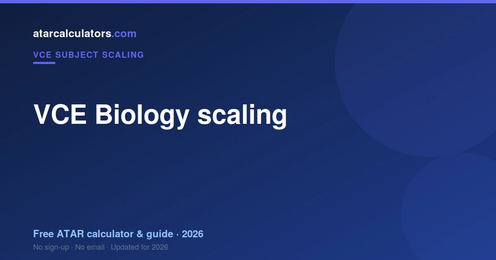
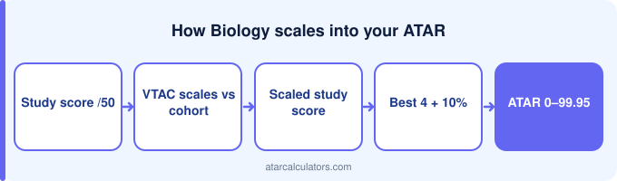

VCE Biology tends to scale close to neutral, a touch up, because it attracts a large, capable cohort. VTAC scales your raw study score against the cohort, and the scaled score, not the raw one, feeds your ATAR. So a strong Biology score contributes roughly at face value, a touch up. Scaling only helps if you score well, so aim to score as high as you can. The exact figures change each year, so check VTAC’s scaling report.
Key takeaways
- Biology scales close to neutral, slightly up.
- VTAC scales your study score against the cohort.
- The scaled score, not the raw one, feeds your ATAR.
- Scaling figures vary yearly — check VTAC.
- The average study score is 30.
- Choose it for fit, not just scaling.

How VTAC scaling works
VTAC scales each study against its own cohort. Biology is the broad science: large, popular, and mixed — which is why it sits below Chemistry and Physics.
Does VCE Biology scale up or down?
VCE Biology tends to scale close to neutral, slightly up, because it attracts a large, capable cohort, so its scaling sits close to neutral, a touch up. Scaling reflects the strength of a subject’s cohort, not how hard the subject feels.
This is a tendency, not a fixed rule. The exact scaling changes each year with the cohort. So treat any general statement as a guide, and check VTAC’s latest scaling report for the current figures.
Why it scales this way
Biology scales around the middle because its intake is wide. Future medics sit beside students taking their only science, and VTAC averages that whole group.
The study score explained
Your Biology study score already ranks you inside a large study, out of 50. Scaling prices that rank.
Raw vs scaled study score
Biology's scaled figures are published annually by VTAC. Its large cohort keeps them stable.
From study score to ATAR
Your best four scaled scores count in full toward an aggregate near 210. A high Biology score contributes properly.
What a strong score contributes
Biology counts through your Primary Four or as an increment, like any study.
Should you pick Biology for scaling?
Biology is not a scaling play and does not need to be. A 42 in Biology beats a 32 in Chemistry, and the students who do well in it usually wanted it.
Lifting your study score
Lifting your scaled Biology score means lifting your rank, which means terminology. The content is accessible; the marking is not.
Estimate your Biology scaling
To see roughly how a Biology score scales, use our VCE Biology scaling calculator. It gives an indication of how a raw score scales, so you can see how the subject fits your ATAR.
Treat the result as indicative. Scaling changes each year, and your study score is what your scaled score depends on.
How Biology compares to other subjects
Biology scales below Chemistry and Physics. Same science banner, broader cohort — that is the whole difference.
A common scaling myth
The Biology myth is that it is the easy science. Its scaling reflects a broad intake, and its content volume is among the heaviest in the VCE.
Biology and your primary four
Biology in your Primary Four counts in full. A strong Biology score there is worth more than a weak Chemistry one.
Why English is always counted
An English study must be in your calculation whatever Biology does.
Using scaling in your planning
Use Biology's scaling as context. If you want it, take it and aim for the top of a big cohort.
Where your raw study score comes from
Your Biology exam marks are not your study score. VCAA converts performance to a score out of 50 first.
Scaling only helps if you score
Biology scaling applies to the cohort as a whole. Your rank inside it is yours.
Common questions
Does VCE Biology scale up or down?
VCE Biology tends to scale close to neutral, slightly up, because it attracts a large, capable cohort, so its scaling sits close to neutral, a touch up. This is a tendency, not a fixed rule, and the exact scaling changes each year with the cohort. Check VTAC’s latest scaling report for the current figures.
How does the VCE Biology study score convert to an ATAR?
VTAC scales your raw Biology study score against the cohort. Your scaled scores are then added into your aggregate, your best four studies plus 10 per cent of your fifth and sixth, and VTAC converts that aggregate into your ATAR.
What is the scaled study score for Biology?
The scaled study score is your raw Biology study score after VTAC scaling, and it is the one that counts toward your ATAR. It can be higher or lower than your raw score, and it changes each year, so check VTAC’s scaling report for the exact figures.
What ATAR contribution does a strong Biology score give?
There is no fixed ATAR from a single subject. Your ATAR comes from your scaled scores across all subjects combined, so a strong Biology score contributes to your ATAR but does not set it by itself. Because Biology scales close to neutral, slightly up, a given raw score contributes roughly at face value, a touch up.